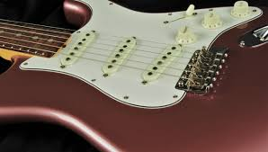
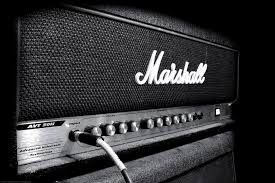

The Origins of Rock
A brief history
When people think of classic rock, they typically think about fast guitars and loud drums. People often overlook the early ages of rock and roll. Classic rock is an evolved version rock and roll which was an evolved version of the blues. Rock started in the 1940's with artists like Chuck Berry playing a style of rock that was heavily influenced from the blues. Throughout the years, a huge amount of different styles of rock emerged and eventually died away.
The heavily distorted guitar sounds and the fast beat of rock and roll quickly influenced many other artists to pursue this new style of music. By the time the 60's rolled around, artists like Bob Dylan and the Beatles were starting a new trend in music. Bob Dylan took rock and roll and used it as an opportunity to preach his values and attempt to influence society. The call for a revolution was partially what attracted the young crowd that had a desire to improve society and eventually lead to the music of the Beatles. The Beatles sound and style heavily influenced almost all of the music that followed it. 
As rock and roll progressed into classic rock, the guitar parts got faster, the structure of music was changed, and new recording technologies allowed a greater variety of music with more experimental sounds. Many people would agree that one of the most experimental main-stream bands is Pink Floyd. Their music was influenced by drugs and the fascinating mind of Syd Barrett. Music like Pink Floyd's became very popular alongside music like Led Zeppelin's which had a more blues influenced sound.